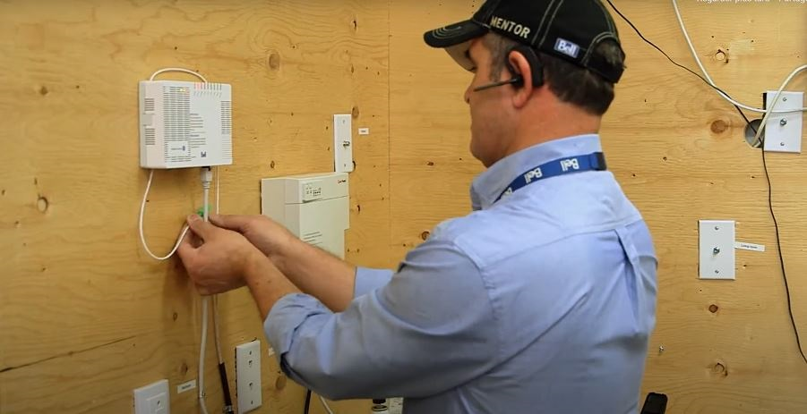
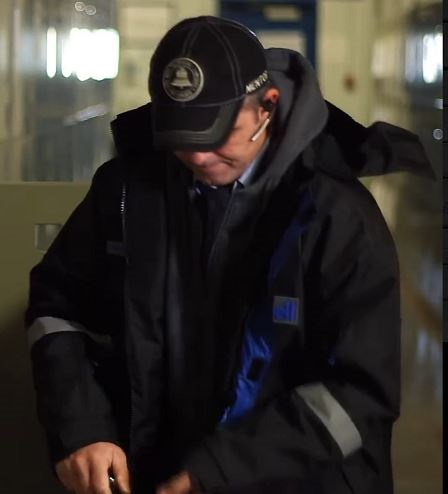
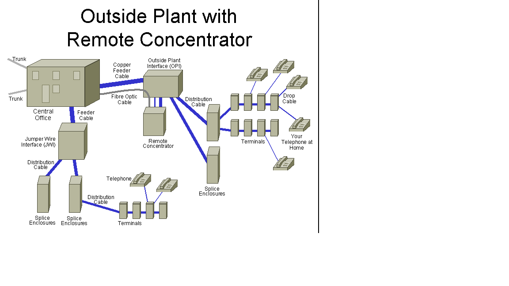
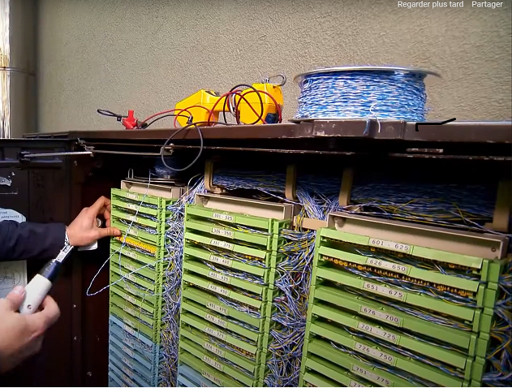

Certeficat Cisco
- Technicen Chez bell solutions tech
- Competance ONT et Modem, UPS, Cablage
- Travail en Hauteur, Permis de conduire valide
- Traveau de soudage Frame
- boucle DSL ,ADSL, Vdsl, Fibre Optique
- Connection Dslam Et slam JWI paire bonding
SOUTIEN TECHNIQUE, SERVICE A LA CLIENTÈLE INSTALLATION ET MAINTENANCE FIBRE OPTIQUE TÉLÉCOMMUNICATION
Professionnel expérimenté des interventions terrain d’installation de câblage ou fibre optique, j’ai également assuré le soutien
technique téléphonique des équipes en intervention. Expert technique du domaine, je peux identifier les problématiques et
proposer des plans d’intervention efficaces en vue de maximiser la satisfaction de la clientèle et le rendement des équipes de
travail. Je souhaite poursuivre ma carrière dans ce domaine et mettre mon expertise au service d’un nouveau défi.
Je dispose d’un très bon dossier de conduite, permis classe 5.
Je suis disponible à travailler le jour, soir et fins de semaine



